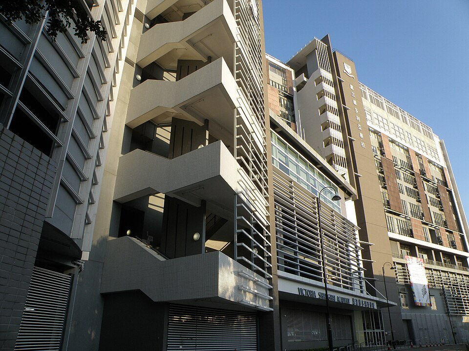

빅토리아 상하이 아카데미(홍콩 애버딘) · 사진: Exploringlife / Wikimedia Commons, CC BY-SA 4.0
빅토리아 상하이 아카데미(Victoria Shanghai Academy, 홍콩) — 이름에 "상하이"가 있지만 홍콩 학교입니다
1. 어떤 학교인가
· 개교 — 2004년에 문을 연 것으로 알려져 있습니다.
· 위치 — 홍콩섬 남쪽 애버딘(Aberdeen), 심완로(Shum Wan Road)에 있습니다. MTR 왕축항(Wong Chuk Hang)역에서 걸어서 십여 분 거리로 안내됩니다.
· 학년 — 만 6세부터 18세까지, Year 1부터 Year 12까지를 운영하는 것으로 안내됩니다. 유치원 과정은 학교 안에 없습니다.
· 교육과정 — IB 전 과정입니다. 초등 PYP, 중등 MYP, 마지막 2년 DP까지 한 학교에서 이어지며, 홍콩에서 처음으로 IB 세 과정을 통으로 운영한 학교로 소개되곤 합니다.
· 언어 — 초등 과정은 영어와 보통화(푸통화)를 함께 쓰는 이중언어 방식으로, 중등 과정은 영어를 중심에 두고 중국어 과정을 따로 운영하는 것으로 안내됩니다. 중국어는 번체자를 씁니다.
※ 학비·정원·재학생 수·합격률처럼 해마다 바뀌는 수치는 이 글에서 다루지 않습니다. 학년 구성과 언어 운영 방식도 연도에 따라 안내가 달라질 수 있으니 올해 요강을 학교에 직접 확인하세요.
2. 핵심 ① — 이름의 "상하이"는 도시가 아닙니다
이 학교를 상하이 국제학교로 알고 계신 분이 의외로 많습니다. 한국어로 검색하면 상하이에 있는 학교 글과 이 학교 글이 나란히 나오기 때문입니다.
그런데 이 학교는 홍콩섬 남쪽에 있는 홍콩 학교입니다. 이름에 상하이가 붙은 이유는 학교를 세운 곳에 있습니다. 이 학교는 빅토리아 교육기관과 옛 상하이의 한 대학(호강대학) 홍콩 동문회가 함께 세운 것으로 알려져 있고, 중국어 학교 이름의 앞 글자도 그 대학 이름에서 온 것으로 안내됩니다. 즉 도시 이름이 아니라 설립 주체의 이름이 학교 이름에 남은 경우입니다.
사소해 보이지만 실제로 손해가 나는 자리가 있습니다.
· 집을 구할 때 — 상하이 학교인 줄 알고 상하이 주거 정보를 모으면 처음부터 헛수고입니다.
· 후기를 읽을 때 — 한국어 후기 중 "상하이 학교" 이야기와 이 학교 이야기가 섞여 있으면, 커리큘럼도 등록 자격도 전혀 다른 내용을 우리 아이에게 적용하게 됩니다. 중국 본토 학교는 외국 국적 자녀 등록 자격부터 확인해야 하지만(→ SCIS 상하이), 홍콩은 그 규정이 적용되지 않습니다.
· 시차를 계산할 때 — 홍콩은 한국보다 한 시간 느립니다. 화상수업 시간표를 짤 때 기준이 됩니다.
국제학교에서 이런 일은 생각보다 흔합니다. 방콕의 ISB와 베이징의 ISB는 약칭이 겹치고, 상하이의 BISS·NAIS는 같은 학교가 이름을 바꾼 경우이며, 두바이의 웰링턴은 같은 이름을 쓰는 학교가 여럿인 경우입니다. 학교 이름만 믿지 마시고 언제나 지역 이름과 함께 확인하세요.
3. 핵심 ② — 유치원이 학교 안에 없습니다
한국 가정이 홍콩에서 학교를 고를 때 자주 그리는 그림이 있습니다. 어린 자녀를 유치원부터 한 학교에 넣고, 졸업까지 그대로 올린다는 그림입니다. 이 학교에서는 그 그림이 그대로 성립하지 않습니다.
이 학교는 Year 1(만 6세)에서 시작합니다. 유치원 과정은 학교 안에 있지 않고, 같은 재단이 운영하는 빅토리아 유치원들이 따로 있어 연계 기관 역할을 하는 것으로 안내됩니다. 그래서 실제 준비는 이렇게 갈립니다.
· 아이가 아직 어리다면 — 유치원과 초등 입학을 두 번의 절차로 생각하셔야 합니다. 유치원에 다닌다고 해서 초등 입학이 자동으로 따라오는 구조인지 반드시 학교에 확인하세요.
· 아이가 이미 초등 학령이라면 — Year 1이 정식 입구이고, 그 위 학년은 자리가 났을 때 들어가는 편입이 됩니다. 어느 학년에 자리가 있는지는 해마다 다릅니다. → 편입·전학 총정리
· 중등 이후 발령이 났다면 — MYP 중간에 들어가는 셈이라, 들어가자마자 기준표 채점 방식과 마주합니다. 이 부분은 아래 5번에서 다시 말씀드립니다.
학년 이름 자체가 헷갈리신다면 학년 체계 총정리를 먼저 보시면 편합니다.
4. 핵심 ③ — 초등과 중등에서 "언어의 무게"가 달라집니다
이 학교의 초등 과정은 영어와 보통화를 함께 씁니다. 홍콩에는 이런 이중언어 학교가 여럿 있어서, 한국 학부모님들이 "중국어를 못 하는데 괜찮을까"를 가장 먼저 물으십니다.
정확한 답은 학교에 물으셔야 나옵니다. 입학 시점의 중국어 수준을 어떻게 보는지, 중국어를 처음 접하는 학생을 위한 반이 따로 있는지는 학교마다 다르고 해마다 달라집니다. 다만 구조에서 미리 알 수 있는 것이 하나 있습니다. 초등에서 중등으로 갈수록 학습의 무게가 영어 쪽으로 옮겨간다는 점입니다. 중등은 영어를 중심에 두고 중국어를 과정으로 운영하는 방식으로 안내되기 때문입니다.
그래서 한국 가정의 준비 순서는 이렇게 잡는 편이 현실적입니다. ① 영어(교과 영어)를 1순위로, ② 중국어는 학교가 정해 준 반에서 따라가되 집에서 조급해하지 않기, ③ 수학은 개념이 아니라 영어 용어부터. 중국어와 영어를 동시에 몰아붙이면 아이가 가장 먼저 지칩니다.
홍콩에서 영어·중국어 이중언어 IB를 운영하는 다른 학교로는 차이니즈 인터내셔널 스쿨(CIS)이 있습니다. 같은 도시의 IB 학교라도 시작 학년·마무리 과정·언어 비중이 다릅니다.
| 홍콩 학교 | 계열·교육과정 | 시작 학년 | 마무리 | 언어 |
|---|---|---|---|---|
| 빅토리아 상하이 아카데미 (이 글·애버딘) | IB 전 과정(PYP·MYP·DP) | Year 1(유치원 없음) | IB 디플로마 | 초등 영어·보통화 이중언어 → 중등 영어 중심 |
| 차이니즈 인터내셔널 스쿨(CIS) | IB | 유아 과정부터 | IB 디플로마 | 영어·중국어 이중언어 |
| CDNIS(캐나다 국제학교) | IB 전 과정 | 유아 과정부터 | IB 디플로마 + 캐나다 졸업장 | 영어 중심 + 중국어 |
| 디스커버리 칼리지 | IB 전 과정(ESF 계열) | Year 1 | IB 디플로마·CP | 영어 중심 |
| 해로 인터내셔널 스쿨 홍콩 | 영국식 | 유아 과정부터 | A-Level | 영어 중심 |
※ 위 표는 각 학교가 공개한 안내를 바탕으로 구조만 비교한 것입니다. 개설 과정과 학년 구성은 연도에 따라 바뀔 수 있으니 반드시 그해 요강을 확인하세요.
5. 한국(주재원) 학생·학부모가 겪는 어려움
· PYP 구간은 진도가 안 보입니다. 초등 IB는 교과서 진도표 대신 탐구 단원으로 굴러가서, 학부모님 눈에 "무엇을 배웠는지"가 잡히지 않습니다. → IB PYP·MYP 구조
· MYP에서 기준표 채점에 부딪힙니다. 답이 맞아도 설명이 없으면 상위 칸에 닿지 못합니다. 한국식으로 정답만 적어 온 아이가 가장 크게 당황하는 지점입니다. → 형성평가·총괄평가
· 중국어까지 같이 걱정하다가 영어를 놓칩니다. 점수는 결국 교과를 읽고 설명하는 영어에서 갈립니다. → EAL(영어 지원 프로그램) · 리딩 레벨 읽는 법
· 수학은 개념이 아니라 용어에서 막힙니다. 한국에서 이미 배운 단원인데 알지브라·지오메트리 용어가 영어라 손을 못 댑니다. → 알지브라 공부법
· DP 두 해는 기한 싸움입니다. 과제가 겹치는 시기에 관리가 안 되면 점수가 무너집니다. → IB DP 점수 구조
· 학교 플랫폼만 보면 원인이 안 보입니다. 무엇을 냈는지는 보이지만 왜 그 점수인지는 안 적혀 있습니다. → 학습 플랫폼·시간표 읽는 법 · 성적표 읽는 법
6. 그래서 이렇게 준비합니다
🧭 먼저 — 아이가 들어갈 "구간"을 종이에 적는다
IB 전 과정 학교는 구간마다 손볼 것이 완전히 다릅니다. "우리 아이는 PYP / MYP / DP 중 어디로 들어가는가." 이 한 줄이 준비의 절반입니다.
· PYP로 들어간다면 — 읽기 수준과 영어로 된 수학 용어. 여기서 벌어 두면 뒤가 훨씬 편합니다.
· MYP로 들어간다면 — 기준표(criteria)를 읽는 훈련이 먼저입니다. 무엇을 쓰면 점수가 올라가는지가 기준표에 적혀 있습니다.
· DP로 들어간다면 — 과목 조합과 기한 관리. 이 구간에서는 학습량보다 일정 관리가 점수를 정합니다.
📖 영어과외 — 이중언어 학교일수록 교과 영어부터
이중언어 학교에 보내면 두 언어가 알아서 늘 것이라 기대하시지만, 성적은 교과를 읽고 설명하는 영어에서 갈립니다. 논픽션 지문을 읽는 속도, analyze·evaluate·justify 같은 지시어의 뜻, 문단의 구조 — 이 세 가지를 먼저 잡습니다. (영어 공부법 참고)
📐 수학과외 — 용어를 붙이고, 과정을 문장으로
아이가 이미 아는 개념에 영어 용어를 다시 붙이는 작업부터 합니다. 그다음 풀이 과정을 영어 문장으로 적는 습관을 들입니다. IB는 답만 적으면 과정 점수를 받지 못합니다.
📅 학교를 방문하신다면
이 학교는 가서 물어야 할 것이 분명합니다. "우리 아이 학년에 자리가 있는가", "중국어를 처음 하는 학생은 어떻게 배치되는가", "유치원에서 Year 1로 올라가는 절차는 어떻게 되는가" 세 가지입니다. 무엇을 묻고 무엇을 볼지는 오픈데이·학교 방문 준비법에 정리해 두었습니다.
7. 홍콩의 강점 — 시차 한 시간의 화상과외
홍콩은 한국보다 한 시간 느립니다. 홍콩 오후 4시가 한국 오후 5시라, 아이가 학교에서 돌아온 직후 시간이 한국 강사진의 수업 시간과 그대로 맞습니다. 시차 때문에 수업 시간을 억지로 옮길 일이 거의 없는 도시입니다. 수업은 아이의 실제 과제와 학교가 준 기준표를 화면에 놓고 "어느 항목에서 깎였는지"부터 보는 방식이 가장 빠릅니다. 홍콩 전반의 사정은 홍콩 국제학교 과외에 정리해 두었습니다.
정리
빅토리아 상하이 아카데미는 2004년 개교로 알려진 홍콩 애버딘의 학교이고, IB 세 과정을 한 학교에서 운영하는 것으로 안내됩니다. 이 학교를 보실 때 확인할 것은 셋입니다. "상하이가 아니라 홍콩", "Year 1부터 시작하고 유치원은 따로", 그리고 "초등의 이중언어가 중등에서는 영어 쪽으로 기운다"입니다. 나머지 수치는 해마다 바뀌니 올해 요강을 학교에 직접 물으세요. 30분 무료 상담으로 우리 아이가 어느 구간으로 들어가는지부터 함께 짚어 보세요.